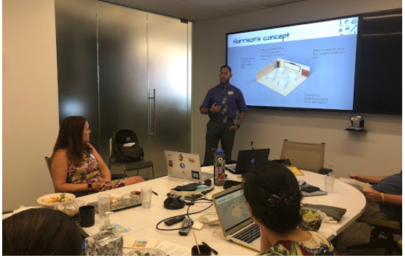
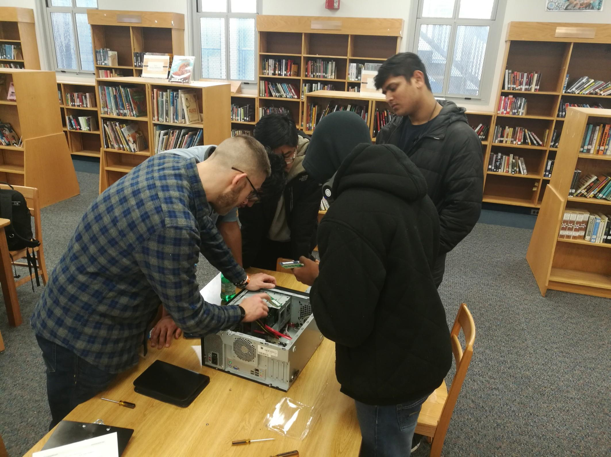

Who is
Tim Harrison-Reyes?
I have been working in Special Education at the Secondary level for the past 12 years and this has awakened my desire to pursue data analysis. As a teacher, I am constantly collecting informal and formal data for Individual Education Plans (IEPS) or to better inform my instruction. Over the past three years, I have led the Occupational Skills and Development Center (OSDC) as a teacher leader and have expanded the program's partnerships by 75% and improved vocational oppurtunities by 50%. Another great part of my current position is that I am one of two Technology Coordinators (TC) within the building.
Being a TC is not only about IT support, it is about improving our customer service through feedback analysis. As part of this analysis, one major issue kept rising: balancing being a teacher and a Technology Coordinator. To better do this, I created the Student Technology Team internship program, which teaches students leadership, computer troubleshooting, and customer service skills.
Out of the internship program blossomed the need for Computer Science within the school. I worked with many industry-specific partners throughout Boston and local colleges to create the Computer Science pathway at Brighton. As part of this pathway, I teach Mobile App Development and Introduction to Computer Science. While I will always have a passion for education, it is time for me to explore more possibilities. I chose Data Analytics because it combined two of my favorite things: solving problems and programming.